Build a Serge
A DIY resource for Serge-format modular synthesizers: how each module works, where to get its PCB today, the schematic and BOM that go with that board, Mouser parts orders, and the panel artwork from 1973 paperface to STS and CGS.

How to build a module
Pick a module
Each build page explains what the module does and how it works, from the Serge manuals.
Choose a board
Compare the Ken Stone / Elby, Low-Gain and Prism boards, with notes on what fits which panel.
Order the parts
Download the BOM spreadsheet, or upload the Mouser file straight into Mouser's BOM tool.
Make the panel
Print the SVG artwork and the 1:1 drill template, or send the file to Front Panel Express.
Modules you can build
Ticks show who makes a board for it. All build pages →
| Module | BOM | Mouser upload | |
|---|---|---|---|
| Active Processor Utility / CV processing Low-Gainschematic | CSV | – | |
 | Analog Shift Register Sample & hold Ken StonePrism Circuitsschematic | CSV | CGS34 ASRPRISM CART |
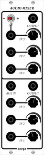 | Audio Mixer Mixer Low-Gainschematic | CSV | – |
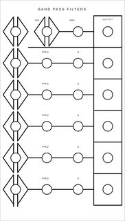 | Band Pass Filters Filter Ken Stoneschematic | CSV | ELBYKIT CGS330 |
 | CV Cluster Utility / CV processing Ken Stoneschematic | CSV | ELBYKIT CGS337 |
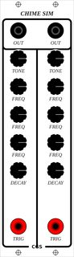 | Chime Simulator Percussion Ken Stoneschematic | CSV | ELBYKIT CGS419 |
 | Compact VCO Oscillator Ken Stoneschematic | CSV | ELBYKIT CGS348 |
 | Cynare Drum Simulator Percussion Ken Stoneschematic | CSV | ELBYKIT CGS47 |
 | Digital Noise Noise / random Ken Stoneschematic | CSV | ELBYKIT CGS331 |
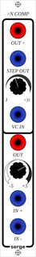 | Divide by N Comparator Logic / divider Low-Gainschematic | CSV | – |
 | Drum Simulator Percussion Ken Stoneschematic | CSV | ELBYKIT CGS318 |
 | Dual CMOS Filter Filter Ken Stoneschematic | CSV | ELBYKIT CGS349 |
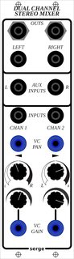 | Dual Channel Stereo Mixer Mixer / VCA Ken Stoneschematic | CSV | CGS101 DCSMCGS108 VCACGS102 EPP |
| Dual Comparator Logic / waveshaping Low-Gainschematic | CSV | – | |
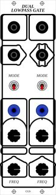 | Dual Low-Pass Gate VCA / filter Prism Circuits | CSV | – |
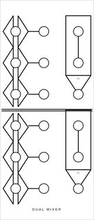 | Dual Mixer Mixing Low-GainPrism Circuitsschematic | CSV | PRISM CART |
 | Dual Processor CV processing / mixing Ken StoneLow-GainPrism Circuitsschematic | CSV | PRISM CARTLOWGAIN CART LGE012 |
| Dual Transient Generator Envelopes / slope Low-Gainschematic | CSV | LOWGAIN CART LGE114A | |
 | Dual Universal Slope Generator Modulation / envelopes / oscillators Ken StoneLow-Gainschematic | CSV | CGS114 DUSG |
| Dual VCA VCA Low-Gainschematic | CSV | – | |
 | Envelope Generator (1973) Envelopes Ken StoneLow-GainPrism Circuitsschematic | CSV | CGS76 ENVPRISM CART |
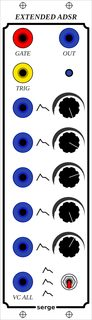 | Extended ADSR Envelopes Ken StoneLow-Gainschematic | CSV | CGS116 ENV |
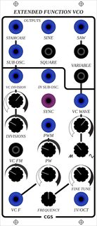 | Extended Function VCO Oscillator Ken Stoneschematic | CSV | ELBYKIT CGS348FULL |
 | Extended Range VCF / Variable Q VCF Filter Ken StoneLow-Gainschematic | CSV | CGS112 VCFQCGS108 VCALOWGAIN CART LGE112 |
 | Gate (1973) Amplitude Prism Circuitsschematic | CSV | PRISM CART |
 | Gate Sequencer Sequencing Ken StoneLow-Gainschematic | CSV | CGS89 GATE SEQUENCER |
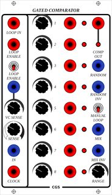 | Gated Comparator Random / sequencer Ken Stoneschematic | CSV | ELBYKIT CGS313 |
 | Hi Gain Amps Interface / amplifier Prism Circuits | CSV | – |
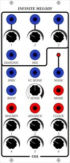 | Infinite Melody Random / sequencer Ken Stoneschematic | CSV | ELBYKIT CGS32 |
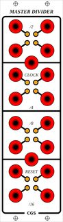 | Master Divider Clock / divider Ken Stoneschematic | CSV | ELBYKIT CGS322 |
| Mix Pro Utility / CV processing Low-Gainschematic | CSV | – | |
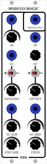 | Modulo Magic Utility / waveshaping Ken Stoneschematic | CSV | ELBYKIT CGS340 |
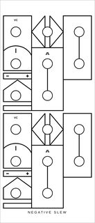 | Negative Slew Modulation / slew Ken StoneLow-GainPrism Circuitsschematic | CSV | CGS82 NEGATIVE SLEWPRISM CART |
 | Noise Source Noise / random Ken StonePrism Circuitsschematic | CSV | CGS97 NOISEPRISM CART |
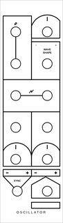 | Oscillator (1973) Oscillator Ken StonePrism Circuitsschematic | CSV | PRISM CART |
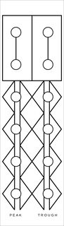 | Peak & Trough Logic / analog logic Ken StoneLow-GainPrism Circuitsschematic | CSV | CGS84 PEAKANDTROUGHELBYKIT CGS26PRISM CART |
 | Positive Slew Modulation / slew Ken StoneLow-GainPrism Circuitsschematic | CSV | CGS83 POSITIVE SLEWPRISM CART |
 | Preamp / Envelope Detector Interface / envelope follower Ken Stoneschematic | CSV | ELBYKIT CGS504 |
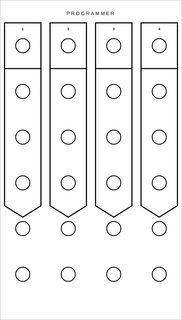 | Programmer (paperface) Sequencer Prism Circuits | CSV | – |
 | Programmer Sequencer Sequencer Ken StoneLow-Gainschematic | CSV | CGS87S PROGCGS87 PROG |
 | Pulse Divider & Boolean Logic Logic / divider Ken StoneLow-Gainschematic | CSV | ELBYKIT CGS336ELBYKIT CGS405 |
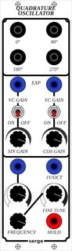 | Quadrature Oscillator Oscillator Ken Stoneschematic | CSV | ELBYKIT CGS414 |
 | Quantizer Pitch / CV processing Ken Stoneschematic | CSV | ELBYKIT CGS502 |
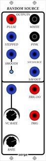 | Random Source Random / noise Low-Gainschematic | CSV | – |
 | Random Voltage Generator Random / noise Prism Circuits | CSV | – |
 | Resonant Equalizer Filter / EQ Ken StoneLow-Gainschematic | CSV | CGS202 RESEQ |
 | Reverb Effect Ken StonePrism Circuitsschematic | CSV | ELBYKIT CGS395 |
 | Ring Modulator Modulation Ken StoneLow-GainPrism Circuitsschematic | CSV | CGS79 RINGPRISM CART |
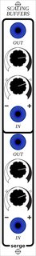 | Scaling Buffers Utility / CV processing Low-Gainschematic | CSV | – |
 | Scaling Processor Utility / CV processing Low-Gainschematic | CSV | – |
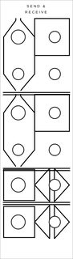 | Send & Receive Interface Prism Circuits | CSV | – |
 | Sequencer (Ten-Stage Pulse Sequencer) Sequencing Prism Circuitsschematic | CSV | PRISM CART |
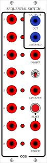 | Sequential Switch Switch / sequencer Ken StoneLow-GainPrism Circuitsschematic | CSV | ELBYKIT CGS328 |
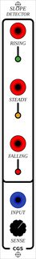 | Slope Detector Logic / CV processing Ken Stoneschematic | CSV | ELBYKIT CGS362 |
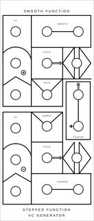 | Smooth & Stepped Generator Modulation / sample & hold Ken StoneLow-GainPrism Circuitsschematic | CSV | CGS92 SSGPRISM CARTLOWGAIN CART LGE092 |
 | Sub Oscillator Oscillator / divider Ken Stoneschematic | CSV | ELBYKIT CGS301 |
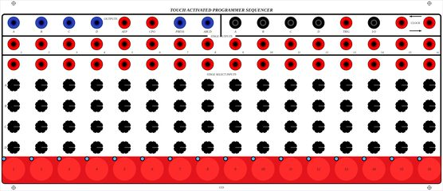 | Touch Activated Keyboard Sequencer Controller / sequencer Prism Circuits | CSV | – |
 | Tri-Core VCO Oscillator Low-Gainschematic | CSV | LGE130LOWGAIN CART LGE130 |
 | Triple Bi-Directional Router Switching / routing Ken StoneLow-GainPrism Circuitsschematic | CSV | CGS88 BDSPRISM CART |
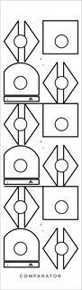 | Triple Comparator Logic / waveshaping Ken StonePrism Circuitsschematic | CSV | CGS96 COMPPRISM CART |
 | Triple Wave Shaper Timbre / waveshaping Ken StoneLow-GainPrism Circuitsschematic | CSV | CGS85 TWSLGE085PRISM CART |
 | Universal Audio Processor Amplitude / mixing / stereo Ken StoneLow-Gainschematic | CSV | CGS102 EPPCGS108 VCA |
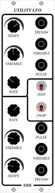 | Utility LFO LFO Ken Stoneschematic | CSV | ELBYKIT CGS58 |
 | VC Divider Clock / divider Ken Stoneschematic | CSV | ELBYKIT CGS309 |
 | VC Filter (1973) Filter Ken StonePrism Circuitsschematic | CSV | CGS77 VCFPRISM CART |
 | VC Phaser Effects Ken StoneLow-GainPrism Circuitsschematic | CSV | CGS90 PHASERPRISM CART |
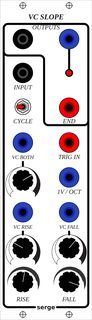 | VC Slope Envelopes / slope Ken Stoneschematic | CSV | CGS75 VCS |
 | Variable Bandwidth VCF Filter Low-Gainschematic | CSV | – |
 | Variable Slope VCF Filter Low-Gainschematic | CSV | – |
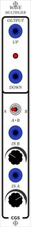 | Wave Multiplier (CGS29) Waveshaper Ken Stoneschematic | CSV | ELBYKIT CGS29 |
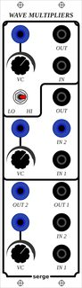 | Wave Multipliers Timbre / waveshaping Ken StoneLow-Gainschematic | CSV | CGS113 VCMLOWGAIN CART LGE113 |
 | X-Fader Mixing / amplitude Prism Circuits | CSV | PRISM CART |
Learn about Serge
Real systems
Catalogued Serge systems, from the CalArts panels to the Warren Burt Serge/Driscoll, and the modules in each.
Library
Original Serge catalogues, manuals and guides, plus our notes on DIY sources.
Panel art by era
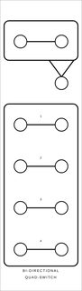

Paperface
42 panels. 1973 to 1976: the first Serge panels, printed on paper, with the early geometric symbols.


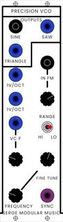

SMMS paper
6 panels. Serge Modular Music Systems, about 1976 to 1979: paper panels with squared boxes and the name in the top band.


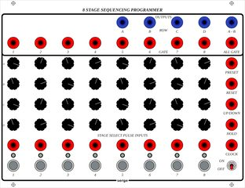

SMMS metal overlay and STS
167 panels. The rounded-box layouts of the SMMS metal-overlay panels (about 1979 to the early 1990s) and the aluminium STS panels.

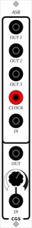
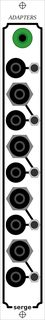

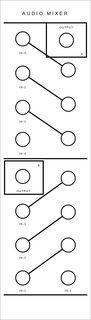
CGS (Catgirl Synth)
74 panels. Ken Stone's Catgirl Synth designs and the user's Catgirl and Human Comparator panel artwork, drawn in the Serge style.